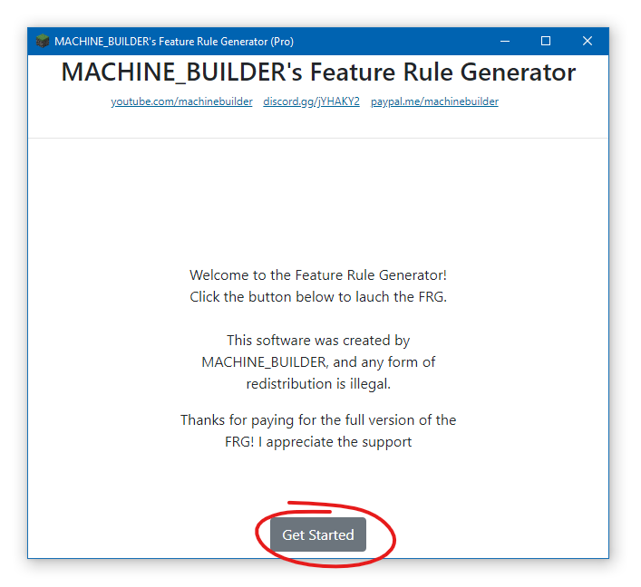
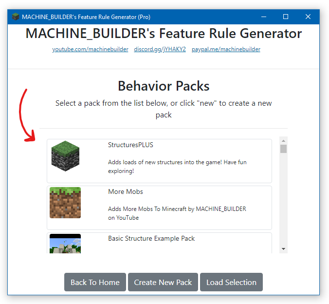
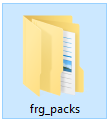
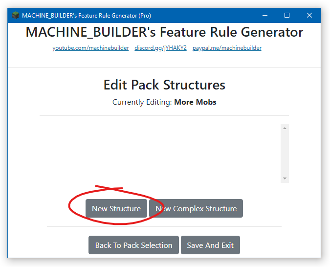
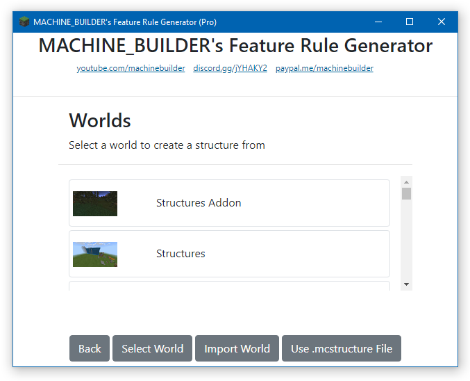

MACHINE_BUILDER's FRG V2
User Guide
Step 1.
Download the program from itch.io, and extract the zip folder
Step 2.
Build a structure in any of your minecraft worlds
Step 3.
Leave the world (you don't need to fully close Minecraft)
Then launch the FRG program
Step 4.
Once the program opens, if you're running the Pro version, then verify your itch.io account
If you're running the Free version, then there's no need to verify anything.
Step 5.
Click the Get Started button
Step 6.
Select a behaviour pack from the list
NOTE: if your pack is not in this list, move your behavior pack to the './frgpacks/' folder in the same directory as the program
Step 7.
Once you've selected your pack, click New Structure
Step 8.
Then, either select a world from the menu, click Import World, or use an existing .mcstructure file
